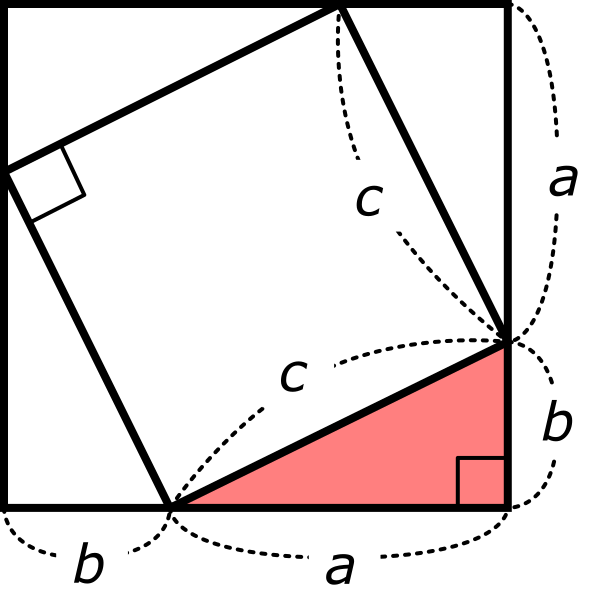

三平方の定理の証明
三平方の定理にはたくさんの証明があります。
その中での有名な証明を２つ解説します。
1. 直角三角形を４つ重ねて正方形をつくる
まずは、最もオーソドックスな方法です。

証明
図のように、合同な直角三角形を４つ用意すると、正方形が２つできます。
よって、できた図形すべての面積Sを２通りの方法で表すことができます。
まず、１辺の長さがa+bの正方形として見れば、
S = (a+b)² ... ①
次に、１辺の長さがcの正方形と、赤色の直角三角形４つの合計として見れば、
S = c²+4×1/2ab
= c²+2ab ... ②
①、②の連立方程式より、
(a+b)² = c²+2ab
左辺を展開すると、
a²+2ab+b²
= c²+2ab
両辺から2abを引くと、
a²+b²=c²
証明終了
面積を２通りの方法で表すという手法は、図形の性質の証明でよく使います。
その表し方は多岐にわたりますが、頭に入れておくといいでしょう
2. 直角三角形を２つ重ねて台形をつくる

証明
図のように、合同な直角三角形を２つ用意すると、台形が１つできます。
よって、できた図形すべての面積Sを２通りの方法で表すことができます。
まずは、上底a、下底bの台形として見れば、
S = (a+b)×(a+b)÷2
= 1/2(a+b)² ... ①
次に、青色の直角三角形１つと赤色の直角三角形２つの合計として見れば、
S = 1/2c²+2×1/2ab
= 2/1c²+ab ... ②
①、②の連立方程式より、
1/2(a+b)² = 1/2c²+ab
両辺を２倍すると、
(a+b)² = c²+2ab
証明終了
これは１つ目に紹介した証明で登場した式と同じです。
おまけ
三平方の定理の証明を解説しましたが、三平方の定理の証明は実は現在、１２２個見つかっています。
これが、全証明が載っているサイトです。
ピタゴラスの定理とその多くの証明